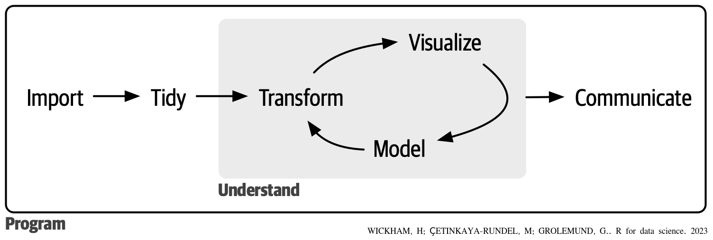
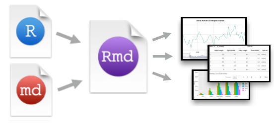

1 Introdução
A ciência de dados é uma área que estuda como extrair conhecimento dos dados. Um campo vasto, que utiliza técnicas e teorias de diversas áreas, tais como: Banco de Dados, Estatística, Machine Learning, Visualização de dados, Computação(e Programação) e experiencia no domínio do problema.
Tudo começa com uma análise detalhada do problema para definir as hipóteses ou perguntas a serem respondidas, entender quais dados serão necessários e como ou onde obte-los. Nesta etapa e nas discussões a cada ciclo, é fundamental a integração de especialista da área (contexto) do problema e os cientistas de dados.Na sequencia, inicia-se a fase de análise dos dados. A figura abaixo mostra um modelo típico de analise de dados em um projeto de ciência de dados, que inclui diversas fase e ciclos que necessitam de uma diversidade de conhecimentos e habilidades.

- Importação e Organização dos Dados:
- Importação inicial dos dados para o ambiente de trabalho (o R) é crucial para iniciar a análise de dados.
- Organização dos dados (tidying) é um etapa fundamental e geralmente a de maior esforço. Tem grande importância para garantir consistência, onde cada coluna representa uma variável e cada linha uma observação.
- Transformação e Processamento dos Dados:
- Transformação envolve focar em observações específicas, criar novas variáveis e calcular estatísticas resumidas.
- Tidying e transformação, chamados de “wrangling”, são essenciais para facilitar a análise dos dados.
- Visualização e Modelagem:
- Visualização é uma etapa importante na busca de entendimento de padrões e relações nos dados.
- Modelos, são ferramentas estatísticas ou computacionais com finalidades específicas para execuções de tarefas e tomada de decisões.
- Comunicação:
- Comunicar os resultados é crucial, independentemente da qualidade das visualizações e modelos.
- Programação:
- A programação é uma ferramenta abrangente usada em todas as fases do projeto de ciência de dados, permitindo automação e resolução eficiente de problemas.
- Embora essas ferramentas extremamente úteis e capazes de resolver praticamente todos os problemas, muitas vezes é conveniente a utilização de outras conforme o andamento do projeto.
1.1 Uso do R
Packages:
- RMarkdown
- Knitr
1.2 O RMarkdown
- Ambiente para criação de documentos de forma dinâmica - Integra código R e texto
- Executa o código R na geração do documento
- Documentos reproduzíveis (reproducible research)
- Uma implementação de Markdown
1.3 package
- package “rmarkdown”
- O arquivo rmarkdown é um arquivo texto com extenxsão .Rmd.
1.4 Arquivo .Rmd

- O arquivo .Rmd comtém todo os registros
- O conteúdo pode ser reexecutado
1.5 Geração de Documentos

Figure 1.1: from:rmarkdown-cheatsheet-2.0
1.6 Sequencia para Geração de Documento - “Rendering”
- Criação de um arquivo .Rmd que inclui codigo R e texto (markdown)
- o knitr executa o código R e converte o arquivo .Rmd criando um arquivo .md.
- Knitr é um package do R que permite a integração do do código R em um documento RMarkdown em um arquivo markdown
- O arquivo .md é usado pelo pandoc, que irá criar o documento final(ex. html, Microsoft word, pdf, etc.).
- Pandoc é um conversor universal de documentos para vários formatos (no caso, de .Rmd para HTML)

Figure 1.2: from:rmarkdown-cheatsheet-2.0
1.7 Formatos de Saída
- Documentos e Slides em:
- html
- word
- Outros: Livros, websites e Documentos Interativos
1.8 Vantagens
- Texto e códigos em um só lugar em uma ordem lógica, no fluxo da análise de dados
- Os resultados são automaticamente atualizados com uma alteração nos dados ou código
- Uma versão do documento sempre pronta para apresentação e discussão
1.9 Boas Práticas
- Mantenha todos os arquivos sob uma mesma pasta/diretório (relative paths)
- Não altere o diretório de trabalho (setwd())
- Compile os documentos em uma sessão limpa (enviroment)
- Evite comando com interação humana (file.choice())
- Agregue informações sobre a sessão do R (sessionInfo())
1.10 Referências
- XIE, Yihui. Dynamic Documents With R and knitr.
- PENG, Roger. Report Writing for Data Science in R
- GANDRUD,Christopher. Reproducible Research with R and RStudio
- MOUNT, John; ZUMEL, Nina. Practical data science with R. 2019.
- WICKHAM, Hadley; ÇETINKAYA-RUNDEL, Mine; GROLEMUND, Garrett. R for data science. 2023.